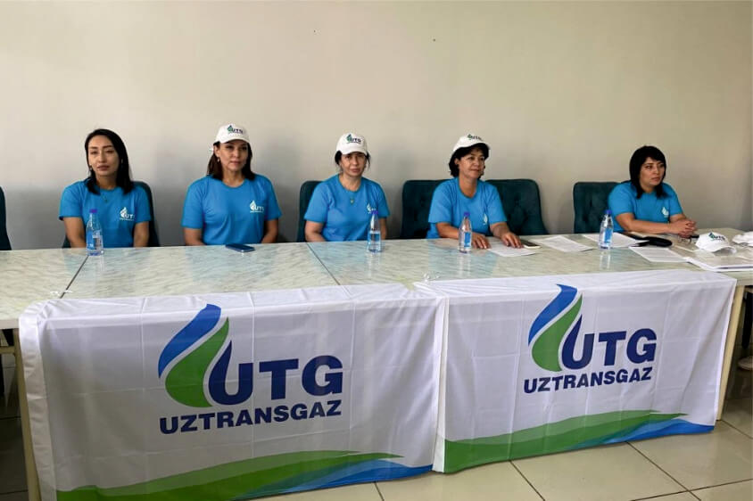
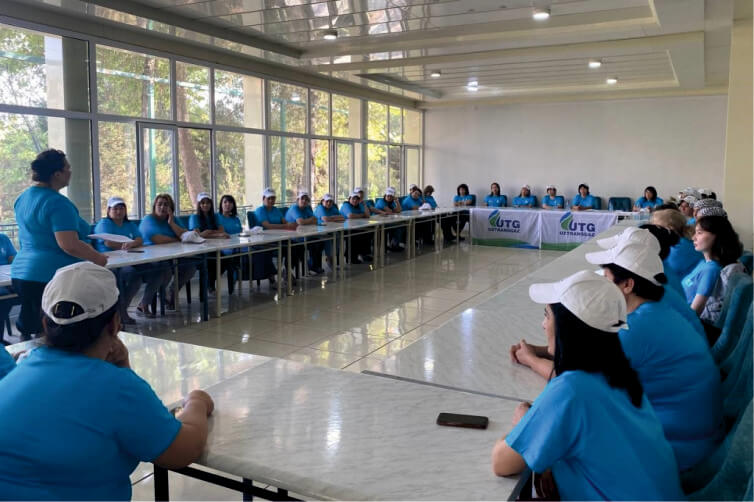

“O‘ztransgaz” AJ tizimida mehnat qilayotgan faol xotin-qizlar ishtirokida Toshkent viloyati “Ugam oromgohi”da boshlangan seminar–treningga shu ibora shior qilib olindi. Xotin-qizlarning jamiyatdagi o‘rni, ijtimoiylashuvi va mehnat sharoitidagi turli masalalarda stressga bardoshliligini rivojlantirishga qaratilgan tadbirda jamiyat ijroiya apparati va ududiy tashkilotlarda faoliyat yuritayotgan xotin-qizlar, mutaxassislar va OAV vakillari ishtirok etmoqda. Dasturi rang-barang tuzilgan mazkur tadbir tafsilotlari haqida qo‘shimcha maʼlumot berib boramiz.
Qariyb 8,5 ming nafar ishchi-xodim mehnat qilayotgan tarmoq ishida nozik hilqat vakillarining alohida o‘rni va ishtiroki bor. Jamiyat markaziy apparati va tarkibiy bo‘linmalarida rahbarlar, dispetcher, muhandis, yurist va shifokor, tozalik posbonlari bo‘lgan xotin-qizlar baholi-qudrat mehnat qilib kelmoqda. “O‘ztransgaz” AJ Birlashgan Kasaba uyushma qo‘mitasi va Ayollar kengashi tomonidan o‘tkaziladigan tadbirlarda xotin-qizlarning ishtirokiga alohida eʼtibor qaratilishining boisi shunda.
